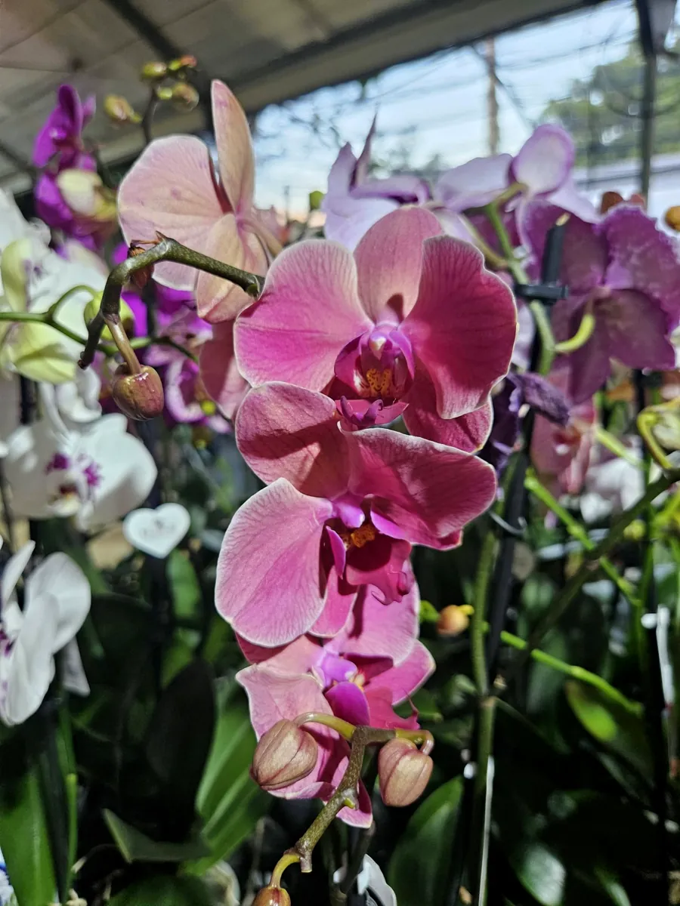
Plantes fleuries
Orchidées, géraniums, suspensions fleuries.
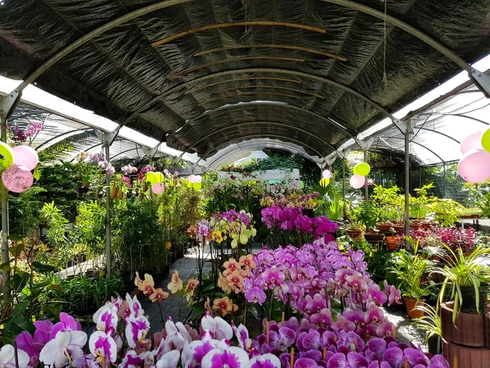
Jardinerie · Pépinière · Pierrefonds
Des plantes pour embellir votre quotidien.
Vente de plantes diverses, au 51 chemin Mourgapamodely, à Saint-Pierre.
Bienvenue à Pierrefonds
Sous la grande serre de Jardi Pierrefonds, les allées se colorent d'orchidées roses, mauves, jaunes et mouchetées, d'anthuriums rouge vif et de callas pourpres. Plus loin, les plantes vertes et les suspensions fleuries attendent leur nouveau jardin, leur terrasse ou leur salon.
« Des plantes pour embellir votre quotidien »
Plantes fleuries, plantes vertes, succulentes, plantes exotiques : chacun repart avec la plante qui lui ressemble.
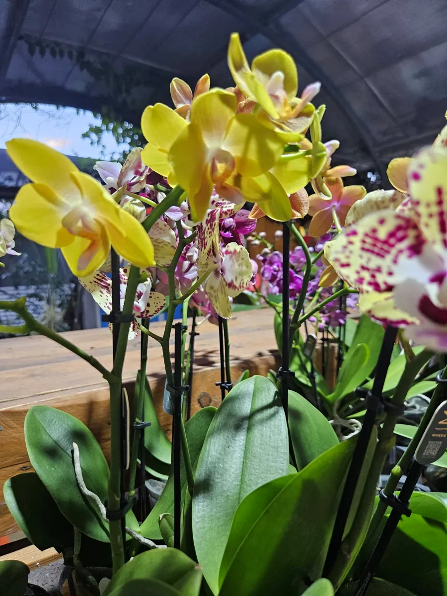
Nos plantes
Les quatre familles de plantes présentées par Jardi Pierrefonds sur sa page.

Orchidées, géraniums, suspensions fleuries.
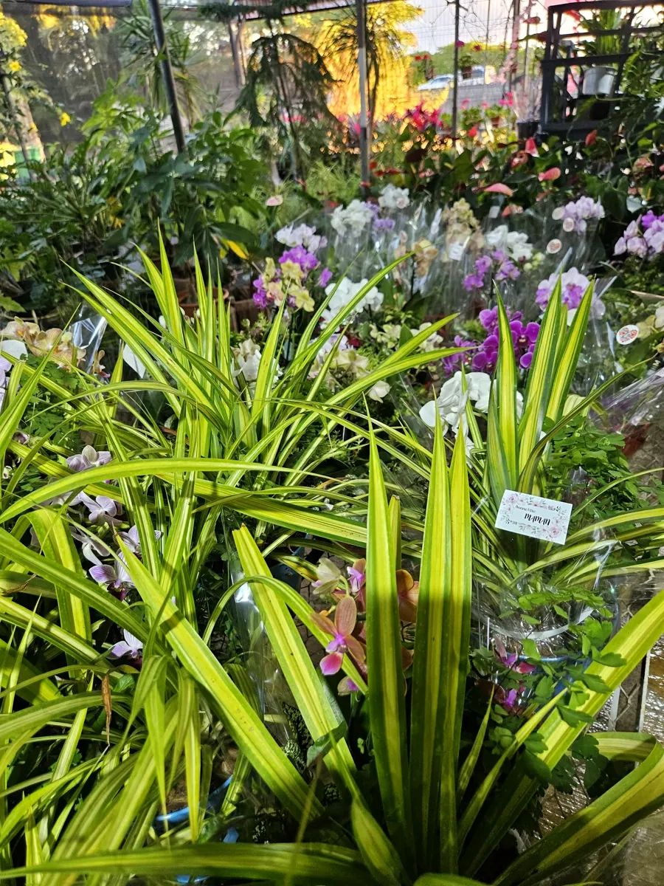
De beaux feuillages pour la maison et le jardin.
Des plantes graphiques aux formes étonnantes.
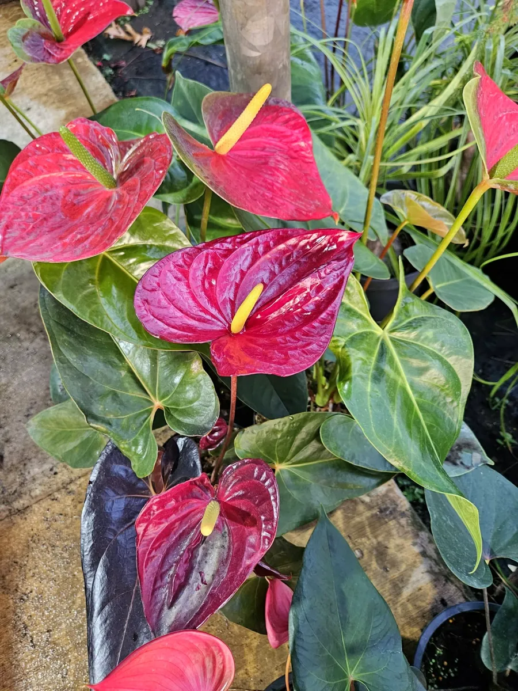
Anthuriums, callas et couleurs tropicales.
Sous la serre
Phalaenopsis roses, mauves, panachées ou mouchetées, grappes vert anis et pourpre : un aperçu des plantes photographiées par Jardi Pierrefonds dans ses allées.
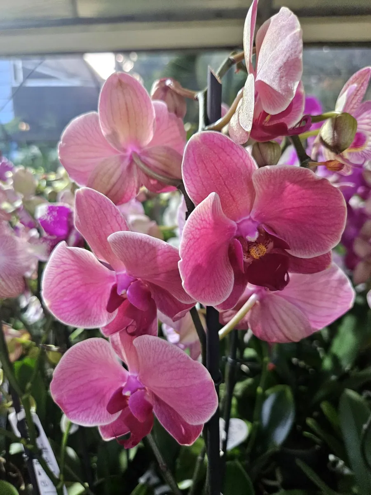
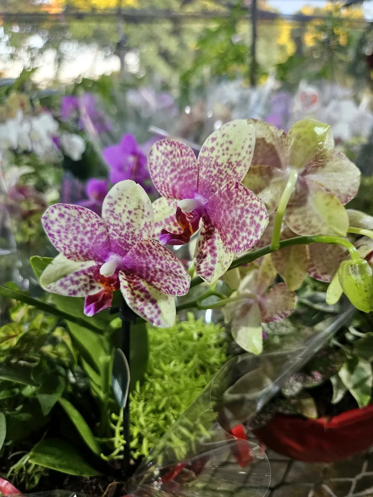
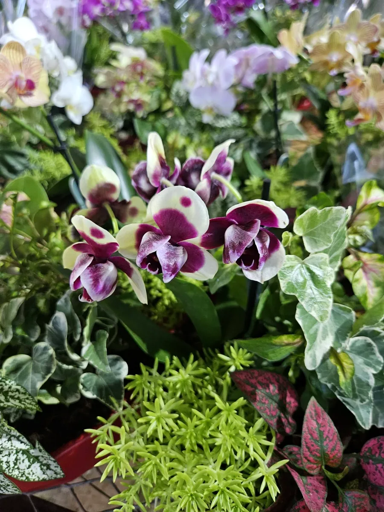
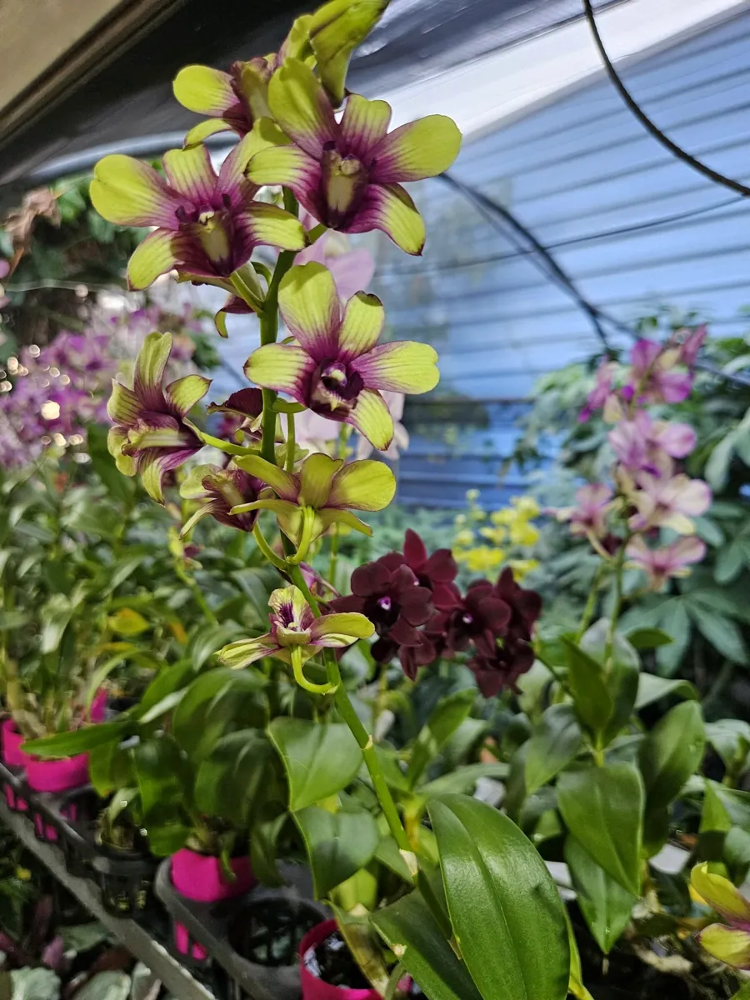
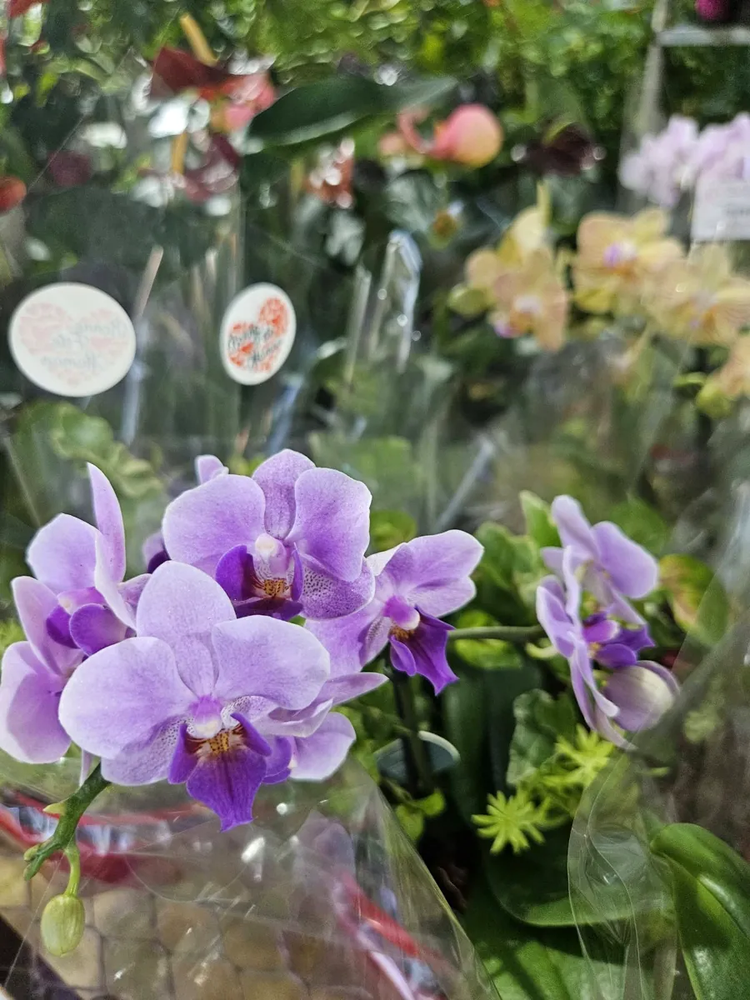
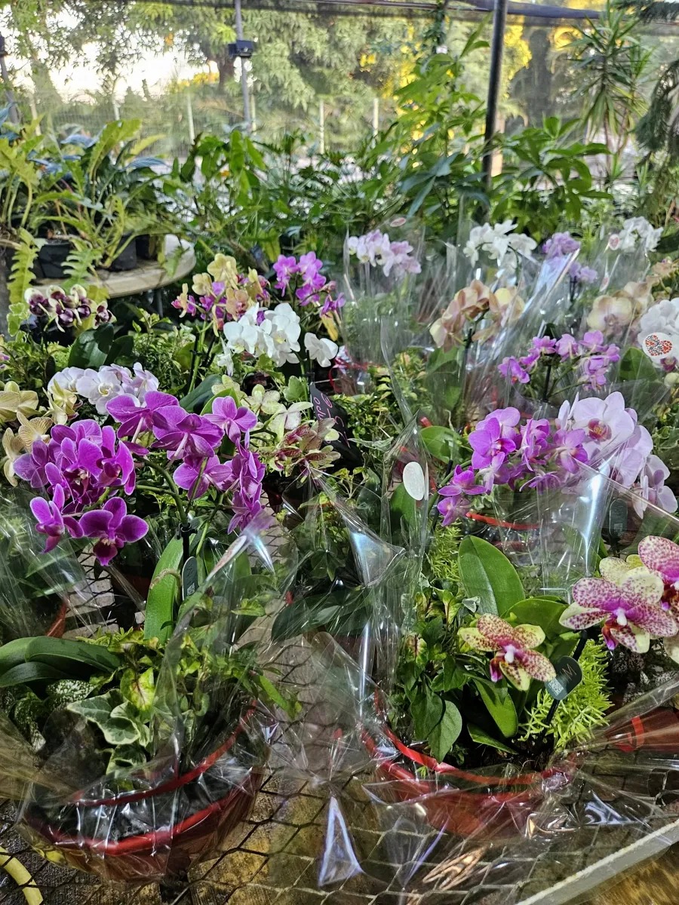
Faites glisser pour flâner dans la serre →
Le métier de pépiniériste
En juillet et août 2022, les pépiniéristes de Jardi Pierrefonds ont animé des ateliers à la Cité des métiers de Saint-Pierre pour faire découvrir leur métier aux enfants de 6 à 10 ans, les mains dans la terre.
Source : Imaz Press, juillet 2022
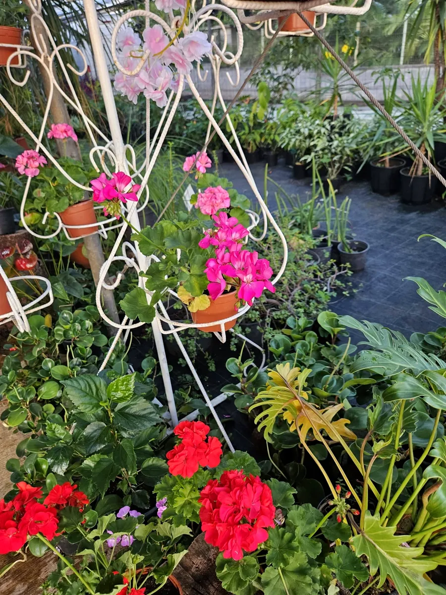
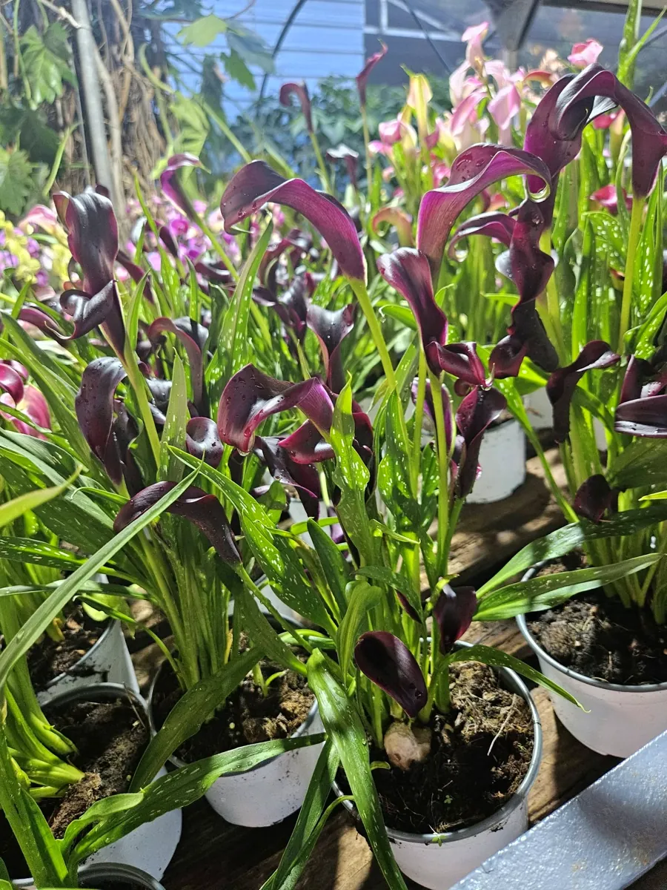
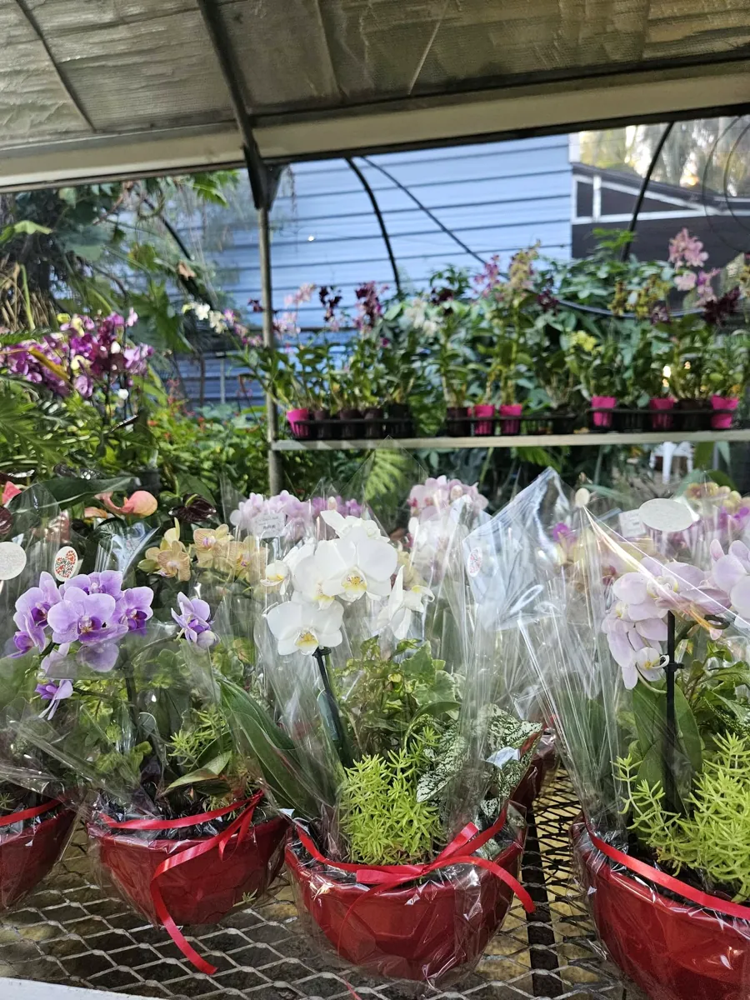
NoëlOffrir pour Noël
Une orchidée emballée, un anthurium rouge vif, une suspension fleurie : à Noël, offrez un cadeau vivant qui embellit le quotidien de ceux que vous aimez.
Une réponse directe de la jardinerie, au 0692 66 91 64.
Nous trouver